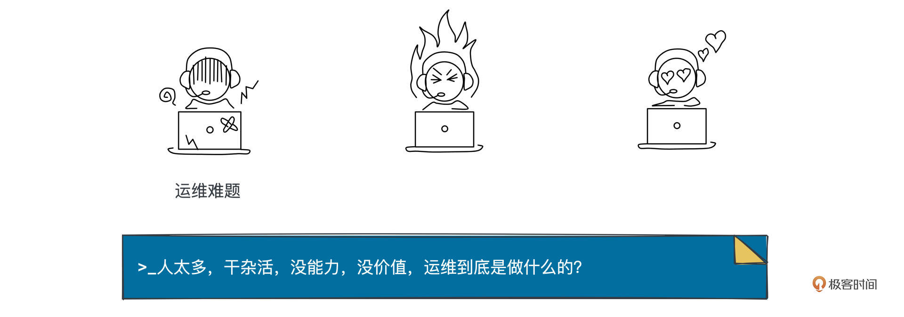
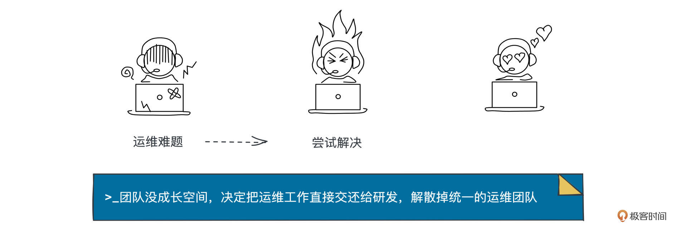
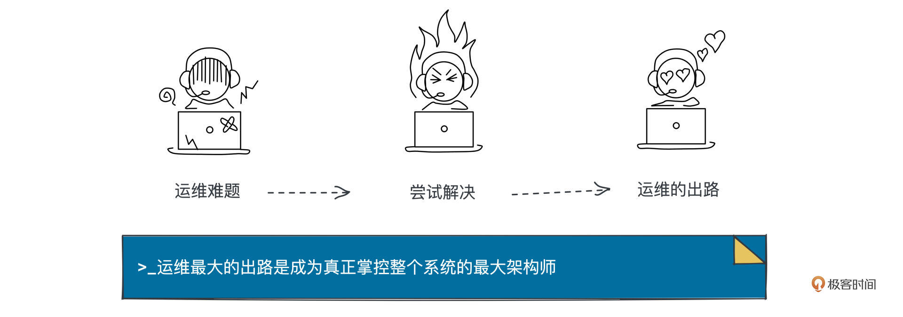

- 01 小厂项目：做程序员不难，难的是做职业程序员.md.html
- 02 小厂创业：做出一个产品，卖给所有人.md.html
- 03 淘宝HSF：能让淘宝出重大故障的就那批人.md.html
- 04 淘宝消防队：真正最优秀的程序员不应该是英雄.md.html
- 05 HBase_T4：Leader最重要的，说白了是要赌未来.md.html
- 06 异地多活：技术圈子的人，见过猪跑很重要.md.html
- 07 运维团队：我能干，只是我不想干而已.md.html
- 08 基础团队：研发效能部门，解决不了研发效能问题.md.html
- 09 统一调度：只是问题非常多而已，摔出来就行了.md.html
- 10 出走大厂：离职？还是不离职？这是一个问题.md.html
- 11 CEO心得：大厂出来创业，最大问题是对钱没概念.md.html
- 团队：在人身上，你到底愿意花多大精力？.md.html
- 开篇词 这一次，我们来采访毕玄.md.html
- 成事：技术人最大的问题就是情怀化.md.html
- 文化：你所在的团队，有多少人敢讲真话？.md.html
- 方向：技术演进，到底该怎么思考未来？.md.html
- 架构：架构师只是个角色，不是个岗位.md.html
- 番外：一位险些没上得了大学的青年，如何开启计算机征程.md.html
- 捐赠
07 运维团队：我能干，只是我不想干而已
你好，我是叶芊。- - 上一讲我们聊到异地多活，毕玄说他能做其实是因为自己正好转岗去运维了，但是从研发转岗到运维？这似乎也是一个不太寻常的职业方向横跳。- - 作为阿里整个运维团队的Leader，我们问他对普遍存在的研发-运维岗位认知鄙视链是怎么处理的，他却说：“说实话，我也觉得解决不了。”- - 运维团队面对的究竟是什么样的难题？又是如何置死地而后生找到了自己的团队价值呢？
- 极客时间：异地多活的时候你就已经转去运维团队了，去了以后你觉得外界对运维最大的误解是什么？
毕玄：我以前是研发线的，研发线会觉得运维没有什么技术含量，解决不了的，还是要研发解。
说白了，大多数研发都认为像运维、测试，我完全可以干，之所以我不干，只是因为我不想干而已，但研发这活不是你能干的。如果有专业壁垒就不一样，比如研发对数据库就不会这么看，因为他觉得你那活我确实干不了（笑）。所以他自然会觉得我在鄙视链的上游，你运维在下游，很正常。但我去做运维以后，就跟很多人说真的不是这样。
运维是一个知识面非常广的岗位。如果你做研发，说实话知识面很窄的，很可能连你的代码在哪个机房、机型是什么、什么样的网络条件、运行环境是什么样的都不知道。我以前刚到运维团队的时候去开会，他们说的是啥我都不知道。
极客时间：像机房、网络条件等等，研发会不会觉得这也不用太关注？
毕玄：这全部是基础设施，但如果你不知道，做系统设计的时候可能有很多偏差。
后来我去了运维才了解，可能研发你说一句话，运维为了满足你这个条件，花了很多的钱，但你如果在软件侧简单改一下，这个钱其实根本不用花。
但研发人也不懂，运维的人也不懂，他不知道原来你软件稍微改一下，这个需求就没有了，他觉得你可能是个合理需求，然后就去干，这就悲剧了，两个没法对话。因为运维如果没有足够的理由去挑战，那研发侧肯定认为我干嘛要改？所以后来我们去跟很多研发说，要整体看一下成本投入，那研发很多就懂了。
极客时间：还有什么新的认知吗？
毕玄：还有对基础设施的了解。其实阿里后来做的很多创新是因为我们对基础设施演进的了解。
异地多活不用说，比如后来我们做统一调度，对整个基础设施有很多改造。因为对网络有了一定概念，知道网络带宽在不断演进，原来是万兆，现在能到25G、40G、100G；以前认为两台机器之间网络带宽太小，在软件侧做了很多东西，其实现在是不需要的；因为网络可以支持，才有了现在的计算存储分离等等。
如果软件的人不懂这些，他根本就想不到很多基础侧的创新。硬件也一样，虚拟化下沉到另外一块芯片上，是因为他对物理机型有更多了解，知道了可能性是具备的，不光是从存量来看，也能从运行环境各个方面来看。
这都是因为这些人知识面非常广，如果你了解很多，整个创新其实能做得非常好。
极客时间：因为了解，才有可能性？
毕玄：对，我们之前也觉得做基础设施的人啥也不懂，因为研发始终认为自己是最牛的，除了业务以外，技术线研发肯定是站在顶端的，觉得其他所有人都是为我做配套的而已。
但是如果你不知道网络可以这么变，不可能敢提出在软件侧要做计算分离这种事，因为他根本就不可能实现，很多都是这样，包括基础设施的大机房建设等等。
所以我自己觉得运维这段经历，一是让我做了异地多活，这还是挺重要的，因为我以前没做过这么大的，也基本不涉及业务，我算是做了异地多活，大家才觉得你是能做整个大系统架构的人，都认可你是可以的。第二个就是知识面的拓宽，我终于知道了一个系统真正的全貌，因为系统事实上都涉及基础设施，其实你也逃不掉的。我们可能认为好像不用管基础设施，但事实上如果不管，软件设计或多或少会有点问题，就不是那么合理。
极客时间：异地多活之后，阿里有些运维侧工具就起来了，你是参与了吗？
毕玄：我是2015年下半年开始带整个运维团队的，当时想让这个团队发生一些变化。
运维以前很苦，几乎所有涉及线上操作的工作全都是运维团队做，一天发几百个系统，根本没法干活，虽然发布也是一套系统，但必须要人点，线上还要盯着看，如果有问题还要查问题，背后还有机器管理等等，杂事非常多。
以前有个比例，1个一线运维要对100多个研发，所以他每天光是回答问题，比如机器在哪、怎么用各种，不用干别的就满了，所以非常苦。但是大家又总觉得，你们运维既然这么苦，为什么不做一些工具解放自己？是不是不想？是不是没有研发技能？
我去了才知道，说实话多数运维做工具的技能还是有的，但事实是他每天根本没有时间做工具。因为研发是很需要连续性状态的，写代码的人都明白，你不能说写个十分钟，被IM弹出一个消息，回复完，半个小时后好不容易进入上下文，结果又被打乱，那代码就没法写了。
后来我就跟很多人说，那是因为你没干运维这个事，你去了之后会发现你也没空。以后中国的运维大会，可以让一线运维的人来个吐槽环节，绝对能把研发喷死。
极客时间：因为比例不够，每天杂事多，太忙没时间做工具，就一直在给支持。
毕玄：对，恶性循环。因为理论上你讲如果运维有很好的工具给研发，他是不会问你问题的，但是这是个悖论。
而且阿里当时也有专门的运维工具团队，就是我带的，但通常来讲业务运维团队跟运维工具团队很容易产生矛盾。
极客时间：运维工具团队给业务运维做工具不是很好吗，解掉刚才说的没时间做工具的死循环，为什么会有矛盾？
毕玄：运维会觉得你工具团队做的东西不满足运维的需求，但是他们一天到晚实在太忙，工具如果不好用，他觉得我还不如手工，因为如果已经习惯了，其实手工效率也不会太低。但是工具需要成熟又需要不断使用。
所以这个局面，让运维这一侧的我们都觉得运维团队未来会越来越难，成长空间很有限，因为干杂活怎么有成长空间，但活又很重，对一家公司来讲，没有这样的人不行。但有了，大家又觉得这批人好像技能不行。
这样恶性循环下去的话，之后一定谁也不想干了，这么苦而且还全是责任。你想，运维不出问题没什么，不出问题大家觉得这个部门不存在，但一出问题，第一眼看到的就是运维。
极客时间：那你15年带这个团队的时候，做了什么？
毕玄：当时我们就在讨论这个团队未来到底走向什么地方，这是一个非常纠结的话题，这也是后来让我去带整个团队很大的原因，我们想，既然工具和运维很容易矛盾，那干脆合成一个团队得了，探索一下，看看能不能解决。
极客时间：合并之后，探索了哪些方法？
毕玄：我带以后，说实话我也觉得解决不了。
我当时接手最早的想法就是，让每个人一天腾出20%的时间来做一些工具的研发，后来发现这根本就不现实。但很多人就觉得是你们团队自己不想或者没有能力解救自己，肯定不是，只是因为有很多现实问题。包括运维的人，你说他不想？他自己当然也想，谁都不愿意每天就做一些很碎片化的工作，大家都想解救自己。
当时Google的SRE，大家都觉得是最好的团队对不对？但是如果你仔细看，关键一他的人多数来自以前非常资深的研发，根本就不是运维岗，那他和研发沟通，包括研发技能，肯定没有问题。第二至少我们外部得到的消息是，他们的人每天可以腾出30%的时间用来做研发类型的工作，而不是运维类型的工作，那就不一样了。
极客时间：Google他们的时间是怎么来的？
毕玄：比例问题。如果能有一定的运维研发比例，让运维有时间去学习一些开发的技能，为自己写工具，这肯定满足需求。但是有多少公司能接受运维跟研发的比率是成一定比例？现在蚂蚁是接受的，所以蚂蚁跟阿里不一样。
极客时间：运维研发比例问题本质是什么？
毕玄：其实是分工，就是运维到底是做什么的，这个认知。
比如说蚂蚁现在的安全生产团队，核心指标是整个系统全年的系统稳定性、资损情况，其他不承担的，很多让研发自己做掉。这样有了专业分工，运维团队相当于跟研发团队没有太大区别，只是业务研发团队做的是业务需求，你运维团队做的是运维业务的需求。
但之前，分工上大家就一直觉得运维是给支持的，再加上传统运维确实做了很多偏执行的工作。我不知道中国其他公司的状况是什么，反正在阿里，我们觉得这条路很难走。

极客时间：在阿里很难走是为什么，当时运维团队的价值当时没有被看到？可以详细说下当时做了哪些尝试吗？
毕玄：我们本来希望能跟集团谈一个数，比如运维就是一比多少研发，你不要老挑战我的人多。因为大家都觉得运维团队人很多。
我带的时候运维团队有一两百人，但是研发十几个人就能做一个非常核心的系统，所以研发团队看你，会觉得你比他人还多，运维动辄上百人，还说不够。问题是他没有想到我们是整个集团的运维，我们还觉得一两百人怎么够，得四五百更多。但这上面一看，你们有这么多人。
另外就是你说的，运维的价值其实很难被衡量，它的价值到底是什么？
因为运维不像研发，研发直接面对业务，做的东西价值是可以被论证的，只要这个业务好，研发肯定有贡献。但运维到底做了什么？我说运维很核心的工作是保护整个系统的稳定，另外是成本控制，但这些都没有业务那么耀眼，而且保护稳定这种事，不出问题是没有人知道的，就跟安全团队一样，也是很痛苦的团队。
极客时间：蚂蚁论证了运维价值这个事？
毕玄：为什么蚂蚁能搞定，是因为后来蚂蚁出过一些故障，阿里也出了，但蚂蚁对故障的重视度必须说比阿里高非常多。
因为蚂蚁是金融，如果它出故障，首先可能会引发用户的信任问题，第二会引发监管的问题，监管就是生命线，那对他们来讲就不是开玩笑的。所以蚂蚁会觉得我得力保稳定。
现在俊义带着的安全生产团队就是一个固定比例，每年不用申请运维名额的，研发你涨我就涨，非常简单。你想，一个固定比率，大家肯定不会一天到晚总那么饱满，就可以在日常工作以外，腾出时间做工具研发，把自己解放出来。其实这样就会越来越好，是个良性循环，但它需要时间。
所以我们当时想跟集团说定一个比例，然后团队要转型也需要一段时间，需要接受这段时间里人是比别人多的。
极客时间：比例的事，集团批了吗？
毕玄：没有。我带了半年多，也试了一些其他方法，但这个问题在阿里太难解决了，所有人都这么觉得。
虽然我们知道Google大概是怎么做的，但都学不出来，而且那个时候蚂蚁也没有搞定运维和研发一比多少的问题，他们也是后来出了几次大故障以后，公司才觉得这是生命线。
当时我就觉得，我很难带领这个团队完成一次组织转型。我们是希望完成组织转型和升级的，向Google靠拢，变成一个非常资深的团队，能更专注做好工具研发，或者维护整个系统的稳定，因为SRE的定义准确讲是维护系统稳定，而不是什么发布、运维答疑这种杂活，但在中国绝大部分公司，我估计运维团队都是这个角色。
极客时间：这组织转型不了，你当时是怎么办的？
毕玄：到16年这个问题太难解决了，当时正好行癫来任集团CTO，我们商量了一下，这么搞下去反正也解决不了问题，就提出了一个方案：把运维工作直接交还给研发，解散掉统一的运维团队，把运维还给了所有的BU，比如一部分人是支持淘宝的，一部分人支持搜索等等，按照BU把人全部还给研发，相当于没有了统一的运维团队。
等到分人的时候，所有人终于知道了，哦你们人确实太少了。以前他们觉得你怎么那么多人，但是现在大家摊在一张纸上来看好了，反正就是这个状况，支持你部门的人其实就1、2个人。
极客时间：这种拆分是怎么落的？
毕玄：就是直接决定组织拆分。
极客时间：搞了多久？
毕玄：应该是一个月就搞定了。
极客时间：会给这一批人选择吗，比如说哪个业务去多少个人？
毕玄：没有选择，你以前对的哪个BU，现在你当然怎么分。不过因为拆的过程太粗暴，当时也引发了一波离职，导致有段时间运维很混乱，加上分散了人也不够，另外工具确实也比较缺失，各家BU又开始自己做工具，因为各家也受不了。
极客时间：直接组织拆分这一下够狠的，你们当时想到这个结果了吗？
毕玄：我们能想到，但是还是可以接受。
因为我们认为只有这样，才有可能让研发承担掉一些很杂碎的运维工作，形成这个习惯，也希望让所有研发都至少知道你的代码跑在哪些机器上、这些机器在哪里、大概环境是什么。其他的方式很难做到这一点，你只要有个团队在这，研发就不可能去做。
你想，一个BU发现自己只有1、2个运维的时候，他们肯定也觉得人少，就会开始让部分研发承担运维的工作，这就是我们想要的，当然研发吐槽就很多了。反正我们觉得大思路上，想象的最后样子没有问题，但是怎么走到那个样子是个很大的挑战。
极客时间：选择组织拆分这种自损八百的方案，也是你们在15年到16年没跑通其他的方案？
毕玄：因为最早大家能想到的方案肯定都是做一套很好的工具，研发用工具完成一些碎片工作，然后运维团队就可以像SRE一样很专注地去看系统稳定性，但我们当时看，这就偏理想化。因为这么走，第一你要先人员扩张。
极客时间：集团不给批，所以做不到。
毕玄：对，这第一步就很难，我的人是要翻倍的，但这个对公司来说……
极客时间：那统一的运维拆到每个BU之后，BU他们自己又开始做很多工具。
毕玄：对，工具又乱七八糟的。因为说实话工具重复做，意义很小，很多工具很类似，所以以前希望统一。
极客时间：以前运维团队统一的目的是什么？
毕玄：最早应该是只有淘宝，因为就一家公司，它肯定是一个，但后来大家觉得淘宝双11的模式做得非常好，希望淘宝的经验可以去覆盖掉其他的，所以慢慢就把各家的运维全部合掉了。
统一的目的，一是相对来讲人效肯定是最好的，二是理论上你可以做统一工作来解决很多问题，运维尤其，这样基础设施能更好地统一演进，如果分散了没有规模，很多事情就很难搞。
比如A业务说我的业务，我要这样的机器，B业务说我要另外一台机器，因为业务方就是这样，什么对我最好，那我就要这样，但对后面设施的采购、维护都是极大的问题。如果能统一运维，还能节省成本，这个机器可能在你这个业务上浪费了点钱，但在全盘里其实是省钱的。但这件事，你如果没有统一的团队，太难做了。
极客时间：很多工具起来之后，效率和成本都不好，有把它们合在一起吗？
毕玄：后来我不太管这个事，我知道分散造成了很多问题，但现在好像想统一了，鲁肃下面又成立了SRE团队，各个运维团队开始归拢了。
所以阿里对我们当年拆掉运维有很多争议，非常多，因为大家觉得现在的乱象就是我们当年那么暴力造成的。这个我们也认了，但我们觉得关键是没有解法。
而且现在合并，跟我们当年不一样，因为运维团队的职责变了，研发已经接受了。我们当年其实也是这样想的，我先拆一下，让大家习惯，后面我可以再整合，但职责就变了，只做全局稳定性的维护、机器管理这些。
极客时间：所以从组织演进的这个角度来看，当时拆分团队的核心目标也是达成了？
毕玄：算的，至少现在SRE团队比当年的运维团队好很多，他们很多人合进去了觉得工作的挺开心，不像以前运维的人，简直是太苦了，他的情绪永远不是很好，压力又非常大。因为如果出故障，那不得了，运维绝对是第一个被问责的，但很多又可能是研发的代码系统设计问题，这个你又负不了责，这就很尴尬。所以研发总觉得运维没啥用，但事实上又离不开。

极客时间：经过运维团队的合并和拆分这一招，这么看研发和运维的分工方式，是不是最开始就不太行？
毕玄：是有点问题。你想，最早是一家创业小公司的时候，是不会有这个分工的，肯定是从头做到尾，写代码，自己发布上线，维护，全都是自己干。我2007年进淘宝的时候，发所有系统也都是我跟运维一起，没有说什么交给他了就不管了，没有，绝对不可能的。
后来某阿里高管有个形象的比喻，他说：你看你们现在，简直活得像大爷一样，写完代码就有一帮人服侍你，什么PM、研发效能、测试、运维，他们好像就是你们的保姆一样，你们写完就什么都不管了，什么都不知道。
所以从原则上讲，虽然我们觉得拆分运维团队这个动作是有点不大合理，但至少逼着研发提升了自己的技能，很多研发是不爽，但如果从他职业生涯来看，我们觉得不是坏事，你技能变好了，对不对？
极客时间：但研发应该会压力比较大吧？
毕玄：研发的抱怨其实差不多，我活已经很多了，每天要接一堆很碎片的需求，你们现在不想干，把活都扔给我们，包括测试团队当时也是希望研发自测，然后自己更多的做工具。所以研发那会觉得我不仅要管这些，还得管上线、发布后的整个状况，你们这些团队就是啥活都不想干，什么都扔给我们。
但研发你未来作为一个系统的掌控者，这些本来就应该知道的，也本来要掌握的，你做系统设计，不可能忽视下面的基础设施完全当它是个黑盒，不可能，就算现在是云，你也不可能把它当黑盒用，对你还得是个白盒。
极客时间：所以阿里强拆一定程度上解决了这个问题，但不能轻易用。
毕玄：必须要有很高的支持，因为这个动作非常大，会影响所有团队，内部肯定会有各种意见。
但我们认为组织演进的路线是什么？你不能说虽然团队的人整体都没有成长，但这样对公司是最好的。这样最大问题是团队会很难活下去，长期一定是个问题，一是不稳定离职率会很高，你老换人，研发线他每次找你也很痛苦，而且也很危险，公司哪天想换掉你很简单。
每个团队可能都要想一下成长空间问题，很重要的，因为不可能说公司哪个团队是个弃子。
极客时间：看未来，你觉得运维可能会往哪个方面发展？
毕玄：我现在觉得，大厂的模式还是不错的，研发应该干掉运维的一些工作。
但这个前提确实是公司在运维侧的工具上要有一定的积累。如果你完全没有积累，按我们当年那么粗暴，也会引发问题，一定会有一段时间很崩溃。当然过了那段时间可能会工具百花齐放，但之后基础设施怎么统一又是一个问题。
但大厂的模式也有一个问题，对研发的技能要求太高了，就相当于研发你要懂运维。但从现实的人才池子来讲，这一点又很难实现，现实中多数研发其实不懂运维。
极客时间：小厂应该更是。
毕玄：对，这很正常，就像我们（贝联珠贯）招人也不可能这个要求，肯定首先在乎你的研发技能，运维差一点就算了，我们可以有运维团队，但也会陷入这个状况。但我们先期就会让运维更多偏向工具，一开始就是这个定位，同时也慢慢告诉研发，运维不是你的配套，只给你工具和文档，其他是不管的。
极客时间：对小厂来说，有必要制作自己的运维工具吗？现在市面上也有很多工具。
毕玄：但运维的工具很难完全通用，这个比较麻烦。通用的很难满足运维所有的需求，因为运维不像研发比较单纯，他杂活简直多到不可想象。
极客时间：所以只能慢慢转变？
毕玄：只能看各家怎么看待运维。大部分公司其实就没有解法，但新一代的公司可能会慢慢好一点，现在研发在技能层面的要求更完整一点，运维团队也在慢慢转向类Google的SRE，更多提供工具，研究整个系统怎么样做得更加稳定，而不是发布。
极客时间：那运维的职业发展路径呢，你怎么看？
毕玄：架构师。
以前我们跟运维团队说，其实他们最大的出路是成为真正掌控整个系统的最大架构师，因为说实话，架构师其实最好是从运维出来的，研发是出不来的，因为研发没有全貌，但运维是一定有的，他要负责线上，所以他看到的一定是整个系统，知识面一定是超级宽的。
只不过关键是运维你能不能成长为这样的角色，因为架构师最大的问题是研发线认不认可你。研发线会觉得你就一个运维，又没写过代码，你提的方案我觉得不靠谱。所以这就是为什么Google相对好很多，因为他的SRE就是原来的资深研发，研发挑战不了。
研发是一个很难伺候的角色。我后来去研发效能了体会更深，就更难了，研发效能是给研发和运维做工具，这个难度简直高到天了。就像我说的，只要研发觉得自己能干的事都很难。

水友讨论区
对谈到这里就暂时结束了，主要聊的是毕玄从研发转运维的经历。
先说点正经的，运维团队，毕玄认为核心工作是保护整个系统的稳定和成本控制，而运维人最好的出路是架构师，但在当时的阿里，面对运维团队价值模糊的困境，他试图寻找解法，但似乎也看不到希望，迫不得已选择了一条争议巨大的路线。
- 但每个团队确实都要想一下成长空间问题，你自己所在的团队，你觉得现在的空间如何，未来的成长空间可能是什么？能满足你的个人发展需要吗？
最后说点不太正经的，今天来个特别的吐槽环节：
- “我完全可以干，之所以我不干，只是因为我不想干而已”，你的岗位存在鄙视链吗，是什么呢？
- 如果你是一线运维，欢迎吐槽当年和研发协作的那些事，当然不能厚此薄彼，如果你是一线研发、测试、安全或其他团队，也欢迎写下你的肺腑之言。
毕竟有一位哲人说过，吐槽，是迈向理解的第一步，期待在留言区看到你的精彩发言;)
下一讲我们会接着今天对谈的尾巴继续聊，毕竟毕玄说运维之后，他去了比运维更难做的研发效能团队，会发生什么呢，下一讲见。
拓展阅读
1. 如果你对阿里当时智能化运维的具体细节感兴趣，可以看阿里开发者的这篇：阿里毕玄：智能时代，运维工程师在谈什么？这是当时毕玄做“智能时代的新运维”演讲的整理稿。
2. 在2016 Velocity China 上毕玄也做了一次演讲，主题是阿里应用运维体系演变
© 2019 - 2023 Liangliang Lee. Powered by gin and hexo-theme-book.